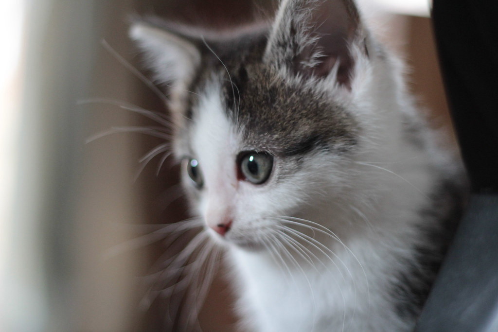
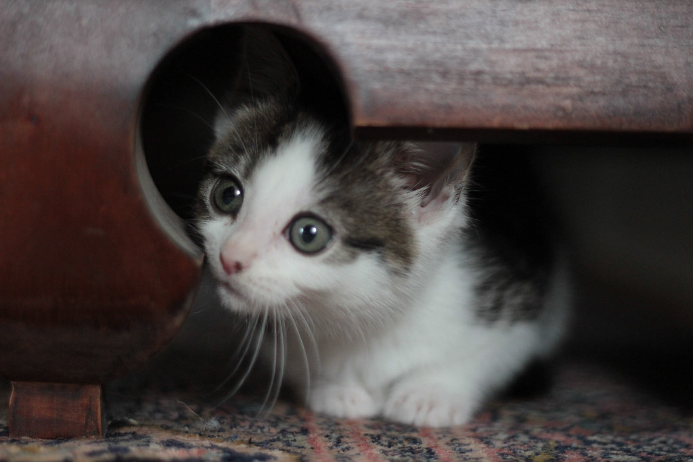
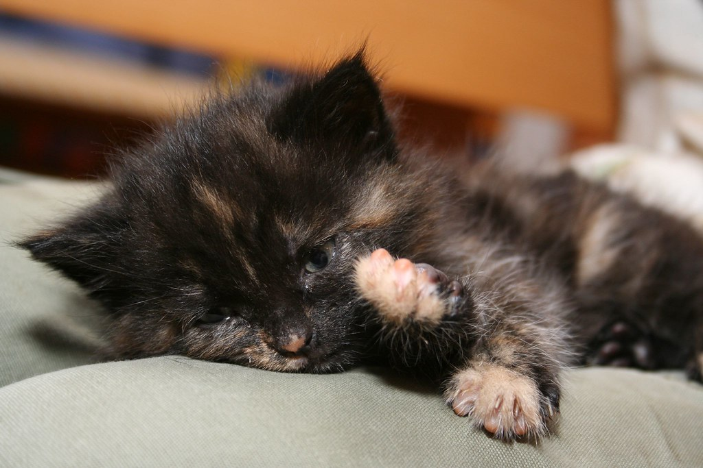

Seattle's premiere drive-thru
cat rental
Each kitty has gone through personality tests and and are taught a foreign language to make them more unique.
Marco enjoys reading and writing fan fiction. He is a calm but anxious kitty who does well when he knows what's going to happen next. Marco speaks Russian fluenty and is learning Japanese.
Jen is a very social kitty. She is always seen with her friends Tabby and Gabby at the Meow Bar. Jen can't wait for the next season of Westworld and is currently learning Chinese.
Sammie is non-gender conforming kitty. They enjoy social activism and speaking out for the underrepresented kitties in the world. Sammie is studying for a masters in program management and is fluent in pig Latin.
